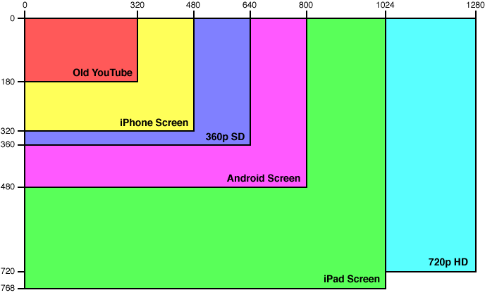
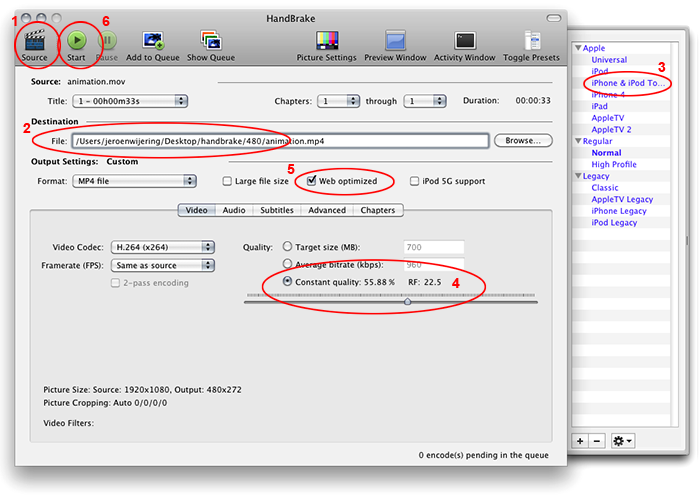

This document provides an introduction to encoding web optimized MP4 videos. It lists the format, dimensions and bitrates required for high-quality playback across all major browsers and devices. It does not cover specialized topics such as adaptive streaming or advanced x264 parameters.
As we find with images (JPG, PNG, GIF) and sounds (WAV, MP3, AAC), videos are available in many different formats today: MP4, FLV, AVI, WebM, MOV, et cetera. Different from images and sound formats, video formats consists of not one but three building blocks. Thus, when we use the term format, we are referring to a combination of:
The better the video and audio codecs are, the smaller and easier to process the resulting video file is, without sacrificing quality. Here is a short list of today's common video formats:
All three formats are of good quality, with MP4 generally seen as the best and FLV as outdated. Where these formats differ greatly are with the browsers and devices that support their playback. Our Supported Media Formats guide lists all details, but in sum:
Since JW Player supports both Flash and HTML5 on desktops, MP4 is the single format that can be used to serve all browsers (Chrome, IE, Firefox, etc) and devices (iOS, Android, etc). For the remainder of this guide, we'll therefore focus on MP4.
The dimensions of a compressed video largely define how good it looks. Here is an overview of the most important ones for online video (2:1 scale):

Though bigger is often better, a tradeoff is made. Larger videos are hard to decode; many mobile phones (or old desktops) will not be able to decode videos above SD quality. If you choose dimensions of 640x360 or lower, your compressed video will always work on:
If your source video is not using the default 16:9 aspect ratio, we suggest you maintain the height and shrink the width. For example, a 4:3 video then becomes 480x360 pixels, which will still work on all devices (640x480 is too big for various phones).
If your source video is in HD, you can also build a 720p version of your video. This is nice for fullscreen desktop playback and tablets (the iPad). Do not embed solely that version, since many devices may not be able to play it. See Working with Playlists for embedding JW Player with a quality selection menu, so users can pick the 360p or 720p version.
Another important compression setting is the bitrate of a video: the amount of bandwidth it uses per second. Videos should download fast enough to be played back in real time, otherwise users see constant stuttering. Luckily, broadband internet is common in many countries today. Its speed of at least 2000 kbps (kilobits per second) is already sufficient for 720p HD video.
For mobile internet, the speed depends upon your reception and network type. With a good reception, the older 2G networks have an average speed of 150 kbps, today's typical 3G networks average 800 kbps and the up-and-coming 4G networks now do about 2000 kbps.
For MP4 videos to look good (i.e. no visible artifacts), here are some target video bitrates. Don't use them as hard rules, but do a few tests with your video and use the smallest bitrate that looks good:
| Dimensions | Interviews / screencasts | Shows / presentations | Trailers / music / sports |
|---|---|---|---|
| 320x180 pixels | 150 kbps | 300 kbps | 450 kbps |
| 480x270 pixels | 200 kbps | 400 kbps | 600 kbps |
| 640x360 pixels | 400 kbps | 700 kbps | 1000 kbps |
| 960x540 pixels | 700 kbps | 1100 kbps | 1600 kbps |
| 1280x720 pixels | 1000 kbps | 1500 kbps | 2200 kbps |
Of course the audio has to be compressed to a sane bitrate too. For AAC, a value of 96 kbps should suit all purposes. For a size of 480x270 pixels, the average trailer/music/sports video will then use 700 kbps overall. That still fits the average 3G connection.
If you don't yet have a tool for transcoding your videos, you should download HandBrake. It is a free desktop tool for Linux, MAC and Windows that contains many settings beyond the scope of this guide. Creating the 480x270 video described above is easy though:

Repeat these settings for the 720p HD compression, but use the Regular » Normal preset instead of the iPhone/iPod one. If your source video is larger than 1280x720 (or you want 640x360), you can scale the output by clicking the Picture Settings button.
Note that many other tools and services are available for encoding your files. An easy-to-use hosted service is our own Online Video Platform Bits on the Run. It is free for low-volume usage and allows you to encode videos in MP4, WebM and FLV format. See this guide for more details.
If you want more control over the encoding process and don't mind investing some money, you can look into a desktop tool like Sorenson Squeeze or an online service like Zencoder.com. Both offer many output formats and many settings for tweaking the quality and filesize.